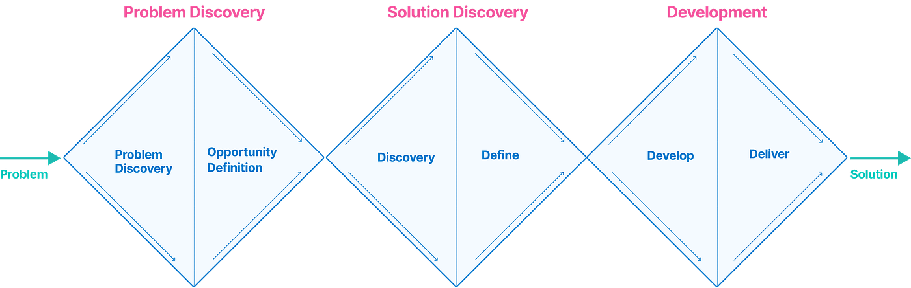
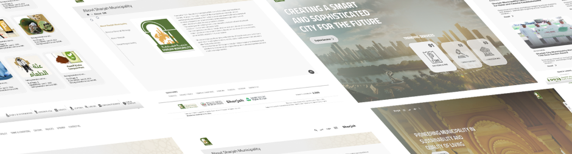

Overview
Sharjah Municipality manages everything from building permits and public health to parks, agriculture, and city infrastructure. Before 2017, residents had to physically visit offices or navigate a fragmented, outdated website that barely worked on mobile.
The organization needed more than a visual refresh. The real problem was structural: dozens of disconnected digital touchpoints, no consistent language, no unified design logic, and services built around internal processes rather than resident needs.
My work was to change that. From scratch. Across six service sectors, two languages, and three platforms — while maintaining continuity with an active system that real people depended on every day.
"A government service isn't successful when it's launched. It's successful when a resident gets what they need without needing to call anyone."
The
Challenge

This wasn't a single app with a clear scope. It was a living platform touching every part of a city government — each department with its own priorities, data models, and legacy systems. The design challenges were layered on top of political, technical, and cultural constraints.
The
Approach
The instinct with large-scale projects is to immediately start designing. I pushed back on that. We needed to understand what we were actually dealing with before a single screen was opened in Figma.
The first three months were entirely research, audit, and strategy. Only after that did we start designing — and even then, we built the system before we built the product.
Key Design
Decisions

These were the decisions where we had real choices and real tradeoffs — not just styling, but structural calls that shaped how the whole platform behaves.
Design
System
The design system was the most consequential deliverable of this project. Not the website. The system.
A well-designed page can still create chaos if the next designer builds the next page differently. The system was what allowed consistency to scale across 120+ services without requiring my involvement in every decision.

What the system included: a full token architecture (color, typography, spacing, elevation), 180+ components each documented with usage rules and bilingual variants, interaction patterns for forms, modals, navigation, tables, and data display, error and empty state patterns, and a governance model for how new components get proposed and added.
What it enabled: a team of four designers and eight developers could build new services in days rather than weeks, with near-zero QA time spent on visual inconsistencies. When a department needed a new form type or a new service category, they could assemble it from existing patterns rather than designing from scratch.
A design system isn't valuable when you build it. It's valuable six months later when someone else uses it to build something you weren't involved in — and it's still right.
Outcomes
Outcomes were measured across three dimensions: resident experience, operational efficiency, and digital adoption. All three moved in the right direction.
Beyond the numbers: the call center reported a measurable reduction in calls from residents who were confused by the process. That metric — the number of people who did not need help — is the most honest measure of whether a service experience actually works.
What I
Learned
Eight years of continuous work on a single platform at this scale teaches you things you cannot learn from shorter projects.